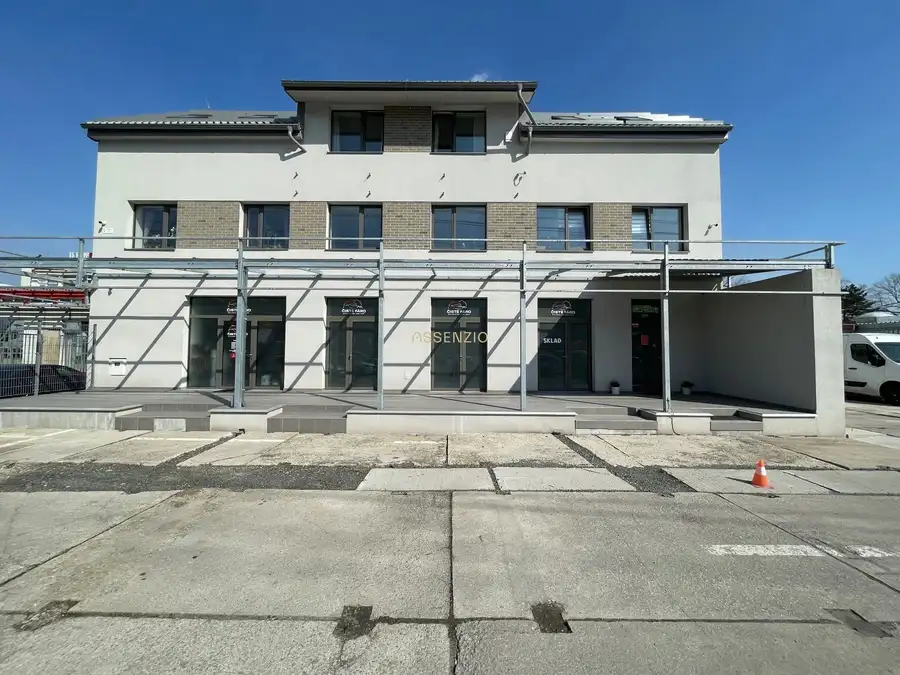
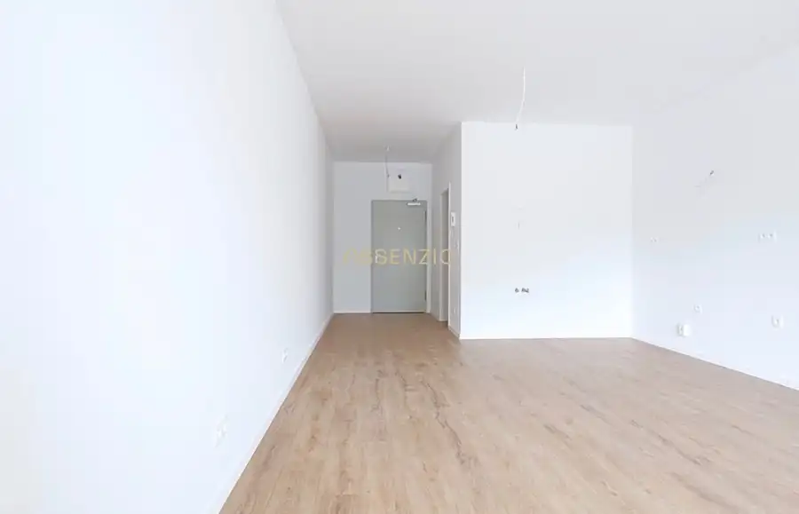

Nový 4-izbový byt na prenájom v Karlovej Vsi s krásnym výhľadom
Karlova Ves, Bratislava
- Dispozícia4-izbový
- Plocha146 m²
- Poschodie6. z 6
- Stavúplne prerobený
O nehnuteľnosti
Assenzio ponúka na prenájom priestranný 4-izbový byt s nádherným výhľadom až do Rakúska, situovaný na najvyššom, 6. poschodí zo 6 v Karlovej Vsi.
Byt ponúka nadštandardnú obytnú plochu 146 m² a priestrannú terasu s výmerou 14,8 m², ktorá vytvára ideálne miesto na oddych a vychutnávanie panoramatického výhľadu.
ZÁKLADNÉ INFORMÁCIE
- 4-izbový byt
- úžitková plocha: 146 m²
- terasa: 14,8 m²
- 6. poschodie zo 6
- adresa: Hlaváčiková, Karlova Ves
- bytový dom v roku 2023 prešiel rekonštrukciou vrátane zateplenia
CENA PRENÁJMU
Nájomné: 2 900€ / mesiac
Garáž: 150€ / mesiac
Energie: 350€ / mesiac
Celková mesačná cena: 3 400€ vrátane garáže a energií.
Pri podpise zmluvy sa hradí nájomne a depozit vo výške nájomného spolu 6800€.
V prípade záujmu je možné prenajať si aj ďalšie garážové státia oproti bytovému domu, a to za 150€ / mesiac za garáž.
LOKALITA
Byt sa nachádza v obľúbenej lokalite Karlovej Vsi, ktorá ponúka príjemné bývanie s výbornou dostupnosťou do centra Bratislavy a zároveň dostatok zelene a súkromia.
Najväčšou prednosťou nehnuteľnosti je jej poloha na najvyššom poschodí a unikátny panoramatický výhľad, ktorý siaha až smerom k Rakúsku.
OBHLIADKY
Byt je úplne nový a aktuálne prebiehajú prípravy pred jeho uvedením do užívania. (Predpokladané dokončenie október 2026)
V prípade záujmu alebo akýchkoľvek otázok nás neváhajte kontaktovať.
Assenzio Real Estate
Parametre
| Úžitková plocha | 146 m² |
|---|---|
| Poschodie | 6/posledné poschodie |
| Počet poschodí | 6 |
| Stav | úplne prerobený |
| Internet | wifi |
| Terasa | áno |
| Garáž | áno |
| Výťah | áno |
| Parkovanie | áno |
| Postavené z | iné |
| Energetický certifikát | nie |
| Dátum zverejnenia | 16. 9. 2026 |
Kde to je
Mohlo by Vás zaujímať

Nebytové priestory7 Cena dohodouPrenájom - obchodné priestory - galvaniho - Ružinov Ružinov, Bratislava 125 m² ZÁKLADNÁ CHARAKTERISTIKA: - Celková výmera objektu 125 m2 (prízemie) - 2x WC - 2x Kuchynka - 2x Klimatizácia - Alarm - Kamerový systém - 4x…
Byt5 175 000 €1-izbový apartmán s terasou v novostavbe VERDENA, Bratislava – Rača Rača, Bratislava 1-izbový38 m² Assenzio Vám ponúka na predaj 1-izbový apartmán v novostavbe VERDENA, situovanej v obľúbenej mestskej časti Bratislava – Rača. Apartmán s celkovou…